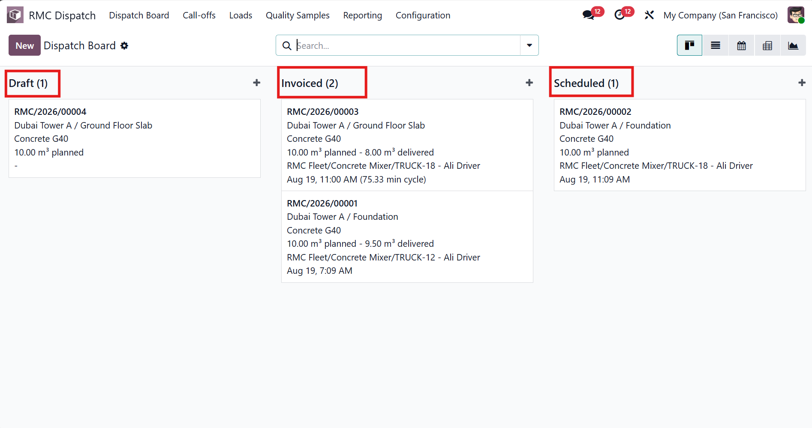
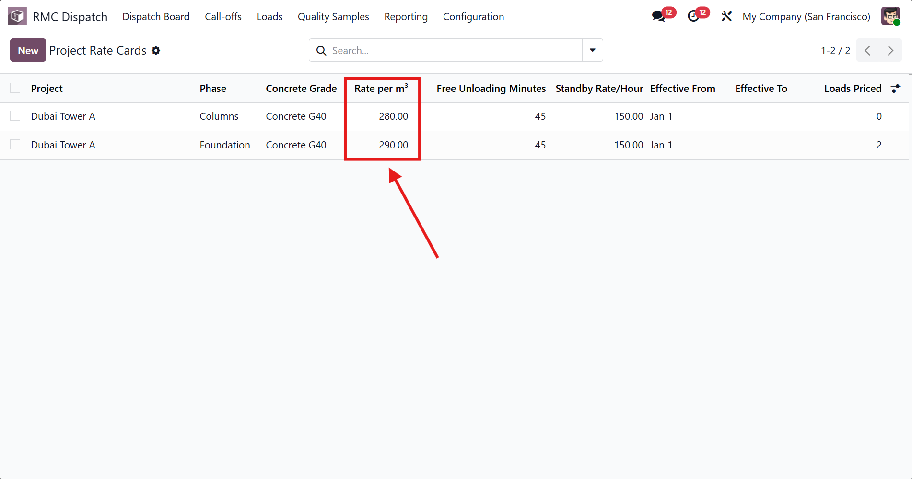
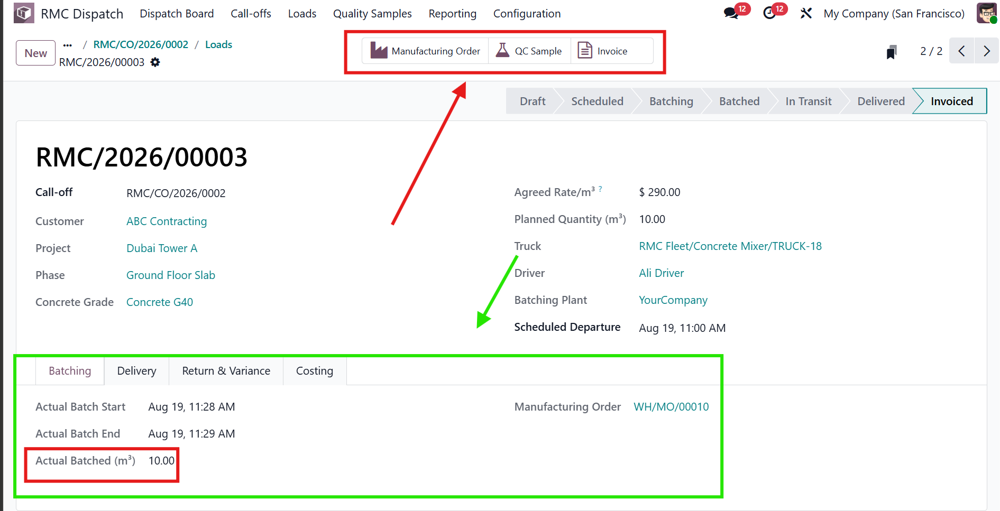
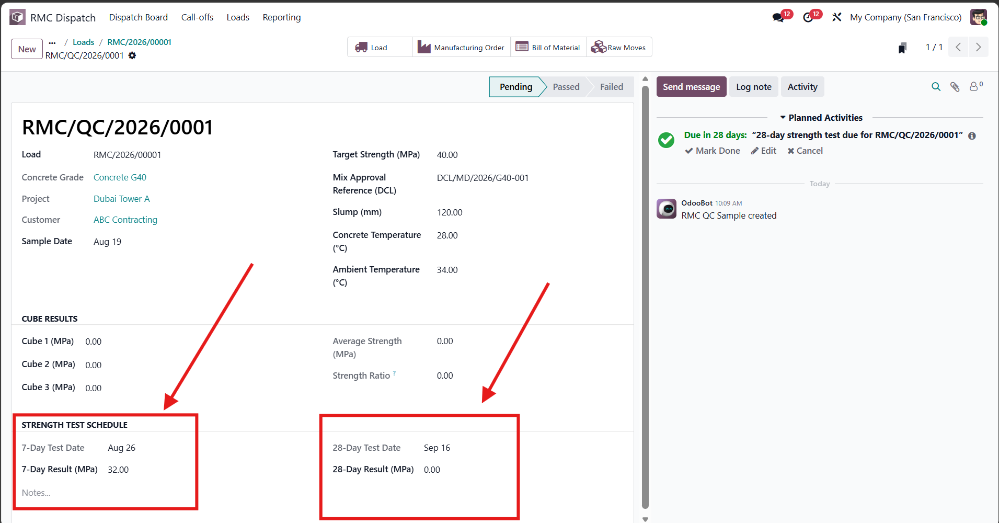
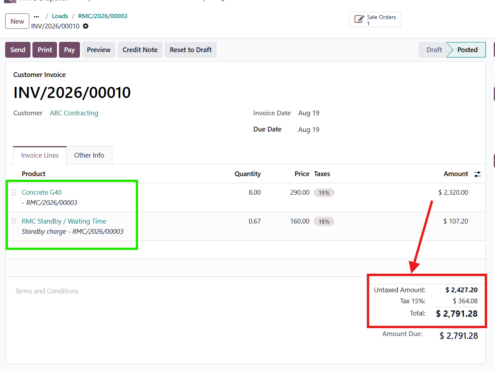
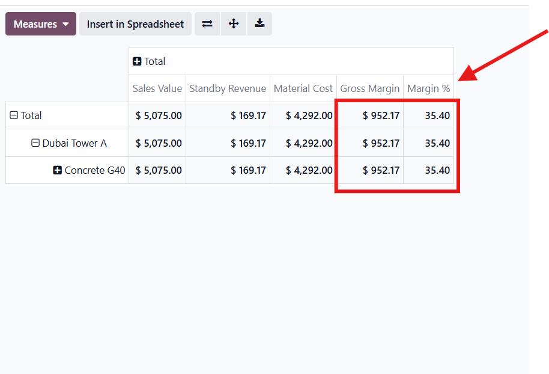

From call-off to cash — batch, dispatch, deliver and invoice, m³ by m³.
Built for producers who batch a material to order and deliver it the same day —
Ready-Mix Concrete, asphalt / hot-mix plants,
precast concrete, and aggregate & quarry blending.
If your business takes a daily order, batches it on a mix design, loads a truck, and bills
what was actually delivered — this app models your real workflow instead of forcing a
generic manufacturing or delivery app to fit it.
Why this app
Price locked at order time, not delivery time. A rate-card change next
week never silently re-prices a load already committed today.
Invoice what was actually delivered — including standby/waiting time
and chargeable returns — not the full order up front.
Project- and phase-level pricing, with automatic override logic and
date-effective rate cards.
Batching tolerant of real-world variance — moisture-corrected material
consumption won't block your production record from completing.
Quality traceability built in — a QC sample is created automatically
per batch, with test dates calculated for you.
Role-based access out of the box — drivers, batch operators, QC
technicians, dispatchers, finance and managers each see exactly what their role needs.
Who it's for
Industry
Fit
Ready-Mix Concrete producers
Primary use case — call-off, load, batch, QC cube/slump testing, delivery ticket, invoicing
Asphalt / hot-mix plants
Same batch-to-order, same-day-delivery model; mix design and grade fields adapt directly
Precast concrete producers
Batch and dispatch tracking, per-piece or per-load invoicing
Aggregate & quarry blending operations
Load-based dispatch and delivery-quantity invoicing
Not a fit for general contractors or builders — this app is for producers who batch and
deliver a material themselves, not for companies managing a construction project or site.
The complete workflow
Sales order confirmed against a project — the commercial contract
Daily call-off raised; price resolved and locked automatically; credit checked
Loads generated automatically by truck capacity; driver and vehicle assigned
Production/batching record created from the material's mix design
Quality sample auto-created, with test-date scheduling
Dispatch → in transit → delivered, with full timestamps and captured signature
Invoice generated automatically from actual delivered quantity
Profitability visible immediately — sales value, material cost, margin, per load
Screenshots

Live dispatch board — every load's status at a glance

Project and phase-level pricing, with automatic override

Each load linked to a real production/batching record

Quality sample with 7/28-day test dates calculated automatically

Invoice generated automatically from actual delivered quantity

Real per-load profitability, calculated automatically
Compatibility
Odoo 19.0, Community Edition. Depends only on standard Odoo apps — Sales, Project,
Inventory, Manufacturing, Fleet and Accounting. No Enterprise license required.
Support
For implementation, customization (fleet GPS integration, fuel management, maintenance
tracking, customer portal, or multi-plant support) and training, contact the publisher
through the support link on this page.